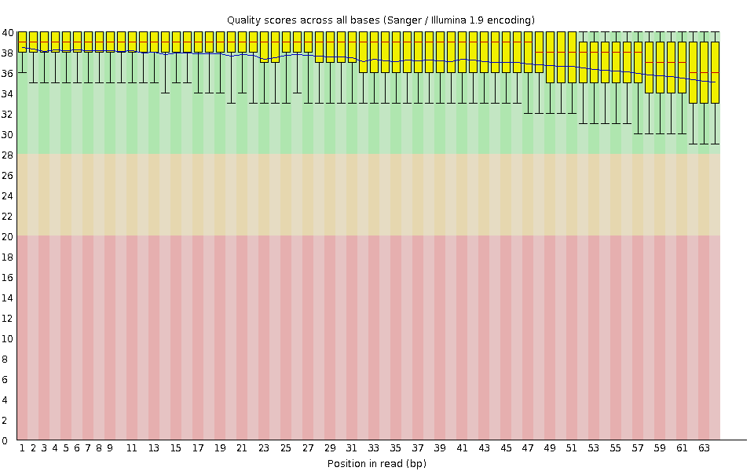
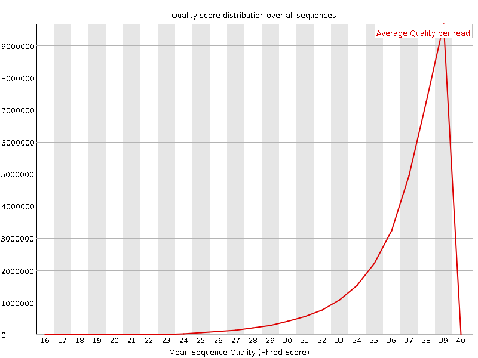
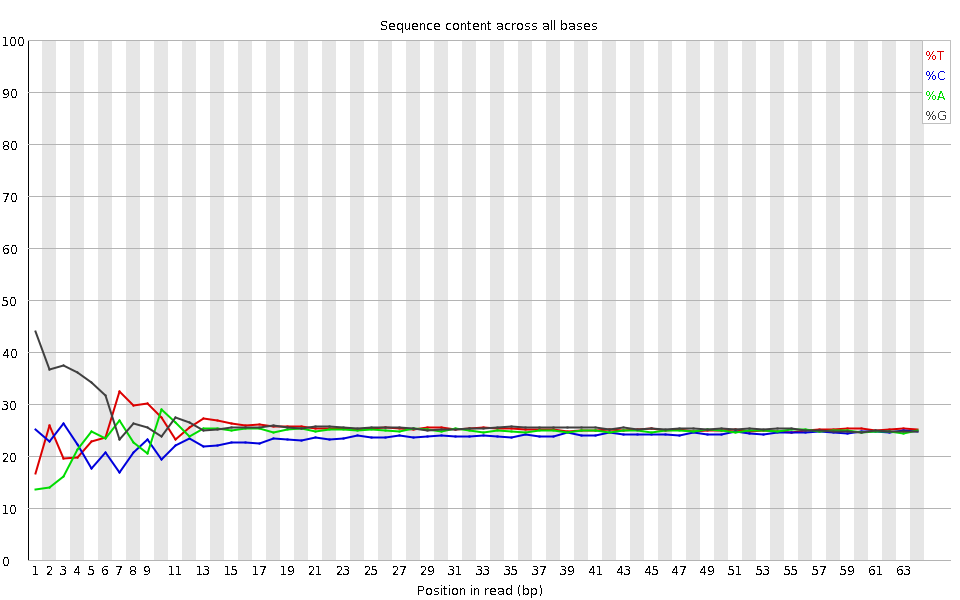
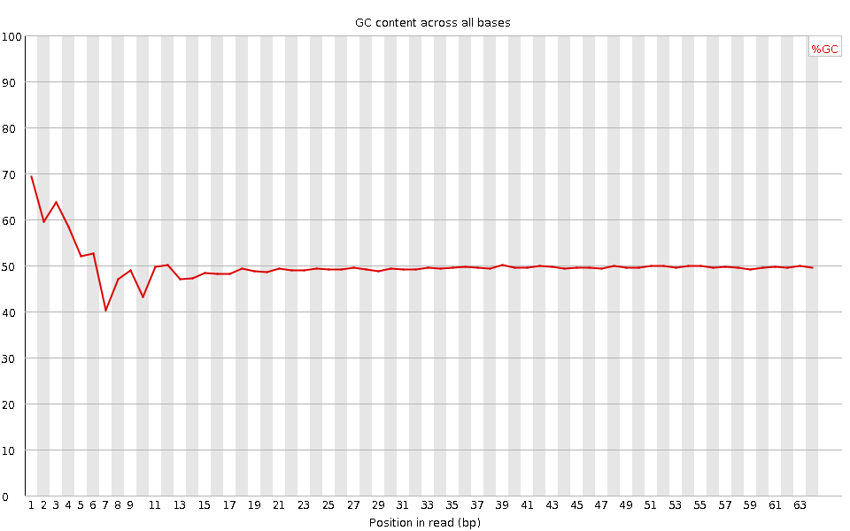
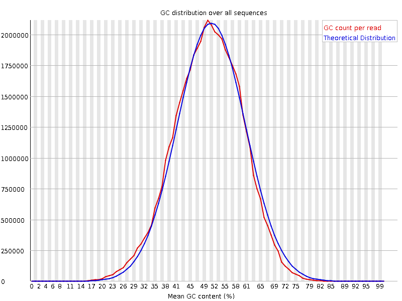
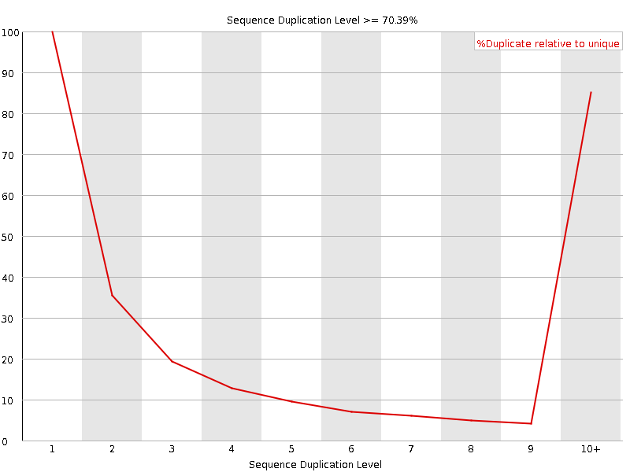
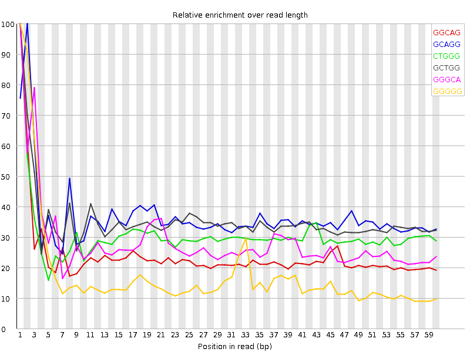

![[OK]](Icons/tick.png) Basic Statistics
Basic Statistics
| Measure | Value |
|---|---|
| Filename | SRR315334_pe_1.f.fastq |
| File type | Conventional base calls |
| Encoding | Sanger / Illumina 1.9 |
| Total Sequences | 32561255 |
| Filtered Sequences | 0 |
| Sequence length | 64 |
| %GC | 50 |
Per base sequence quality

Per sequence quality scores

![[FAIL]](Icons/error.png) Per base sequence content
Per base sequence content

Per base GC content

Per sequence GC content

Per base N content

Sequence Length Distribution

Sequence Duplication Levels

Overrepresented sequences
No overrepresented sequences
![[WARN]](Icons/warning.png) Kmer Content
Kmer Content

| Sequence | Count | Obs/Exp Overall | Obs/Exp Max | Max Obs/Exp Position |
|---|---|---|---|---|
| GGCAG | 4450270 | 2.1104498 | 8.896785 | 1 |
| GCAGG | 4305000 | 2.0415585 | 5.580497 | 2 |
| CTGGG | 4424200 | 2.0287971 | 6.628969 | 1 |
| GCTGG | 4173910 | 1.9140221 | 5.409407 | 1 |
| GGGCA | 3975760 | 1.8854232 | 6.6368437 | 1 |
| GGGGG | 4079690 | 1.5955114 | 9.094402 | 1 |
| GGGGA | 3743445 | 1.5837888 | 8.316631 | 1 |
| GGGAG | 3662515 | 1.5495486 | 6.1003942 | 1 |
| TGGGG | 3782600 | 1.5475026 | 5.664999 | 1 |
| GGGTG | 3552690 | 1.4534439 | 5.7801223 | 2 |
| GTGGG | 3533620 | 1.4456422 | 8.205577 | 1 |
| GGGGT | 3438640 | 1.4067849 | 6.843974 | 3 |
| GGGGC | 3187905 | 1.3974652 | 5.61348 | 2 |
| TGGGT | 3177965 | 1.3600607 | 5.147403 | 2 |
| CGGGG | 2513380 | 1.1017773 | 8.412132 | 1 |
| GCGGG | 1420860 | 0.622855 | 5.398594 | 1 |